Ulties is a web Development, Design and Branding agency based in Denmark. We did a Full re-brand, re-design and re-development of the existing website, branding and corporate identity. Including SEO optimization for local Search Engine enqueries and marketing strategies for client generation.
We had two routes when it came down to development. Route one was going for a custom coded version of the website, using a language like VUE/NUXT. Route two was going with WordPress and making a more simplified but user-friendly experience. We chose route two and we did that in order to ease the user experience and ditch the development phase of a custom CRM, otherwise, we would have had a more extensive waiting period for project completion.
Ulties is a relatively small company based in Denmark, which strives to be transparent and friendly with its customers. We took that as a foundation and created a design that could speak that to its future clients. We chose soft colors and chose soft and friendly illustrations with less sharp corners and more abstraction.
What you see here is the overview of the first design that we created in Figma, which in the long run didn't cut it due to its overly pale look and lack of playfullness.
Most of the main pages were based to be full height, with over 1400 pixels of height. Later on, we decided that it would be a great idea UX wise to add some diversity and create some 100vh pages that had great animations. These were the service pages, or rather the service page because the content is represented on one page which switches content.
We used the stockholm icon set which in my mind is one of the best sets I've come across so far. It's a premium icon set that can be found and purchased on several websites.
The design template ended up failing in the long run. We decided to scratch it after developing the design files in Figma. That was due to the development process that was to follow. We ended up deciding that we'd move to a wordpress alternative, mainly due to having more ease of use for more than one person.
The initial approach was relatively successfull but there was one downfall that we didn't take in mind. Well, actually there was more than one.
First of all we didn't take in mind the time frame of development, because the initial design was made to be developed on laravel with custom back end, we didn't take in mind the time frame of the project, which was relatively short and the ease of use and update.
We decided to scratch it and came up with the renovated design, which is somewhat similar to the initial one, but is based on wordpress, which allowed us to shorten the gap on the end date and also open a large window for scaling, which was really needed becasue the company could have more than one user on the back end CRM, where we'd have to custom develope on from scratch if we were to use Laravel.
We decided to improve the illustrations by chosing illustrations with more depth and colors, we decided that the initial design had a pale feel to it because the illustrations were with the exact corporate colors which was making an overall steril feeling when viewing it.
We also updatet the user animations and added live backgrunds to create a futuristic and envocative feeling when looking at the pages, with flying boubles and other fractals that interact with the mouse location movement and have hover effects. Yet we made them really subtle so they wouldn't divert user attention and focus away from the main focus areas and points.
In order to give some color variety, we decided to use a wide range of soft colored illustratons that are equal in strenght compared to the corporate color scheme. We thought that going all blue would over saturate the colors and create a somewhat steral feel to the overall result. We went with two different styles of illustrations, wchich go hand to hand with the overall look.
We were stuck on two routs when it came down to development. Route one was going for a custom coded version of the website, using a language like VUE/NUXT. Route two was going with wordpress and making a more simplified but user friendly experience. We chose route two and we did that on order to ease the user experience and ditch the development phase of a custom CRM, otherwise we would have had a more extensive waiting period for project completion.
Without resorting to reality, one can, given infinite time and resources, produce all conceivable theories. One of these theories is bound to be the “truth”. To decide among them, scientists conduct experiments and compare their results to predictions yielded by the theories. A theory is falsified when one or more of its predictions fails. No amount of positive results – i.e., outcomes that confirm the theory’s predictions – can “prove right” a theory. Theories can only be proven false by that great arbiter, reality.